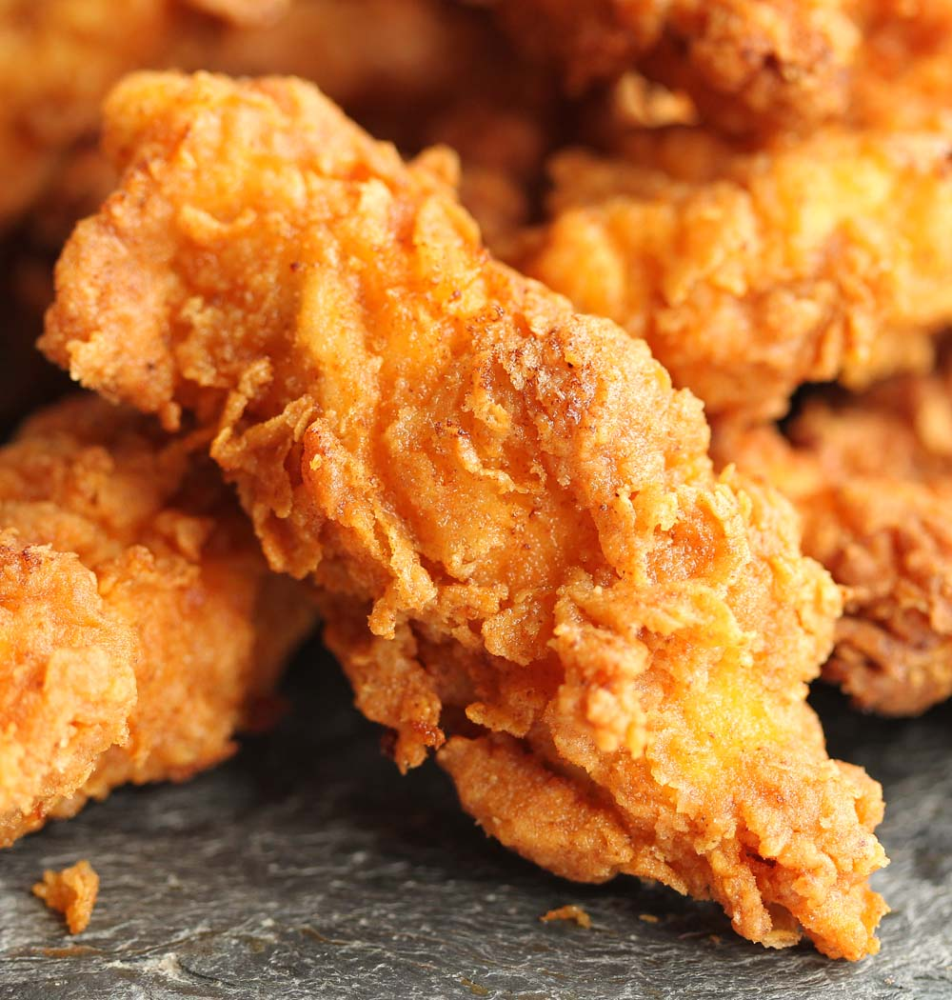

Homemade Chicken Tenders
Ingrediants
- Store bought, non-breaded chicken tenders
- 2 eggs
- 1/4 quarter cup of milk
- Lousiana Chicken Fry
- Salt and Pepper Shakers
- Old Bay seasoning or seasoning of your choice
- Some type of deep fryer
Why I Love It
Well, I love chicken, more speciffically, chicken tenders. For the longest time I wanted to make homemade chicken tenders. So, this is my own recipe that I have made through trial and error. It's really good, I would compare it in terms of texture to something like Bojangles. The reason for the egg and milk is it allows the chiken mix to stick to the chicken and not fall off while in the deep fryer. It's not necessary but it makes the process a lot easier. I also recommend making fries at the same time.
Steps
- Unpack Chicken Tenders
- Grab two bowls, use one to mix eggs and milk together, use the other to pour the fry mix
- After stiring egg and milk mix, soak chicken tenders in the mix and let them sit for about a minute
- One at a time, place tenders into fry and roll them around in the mix until fully covered
- Heat deep fryer oil to 350°F and place chicken tenders in deep fryer
- Let them cook for 5-7 minutes or until they appear a golden brown color
- Once they are done, remove them from fryer and add salt, pepper, and your faorite seasoning
- Enjoy!